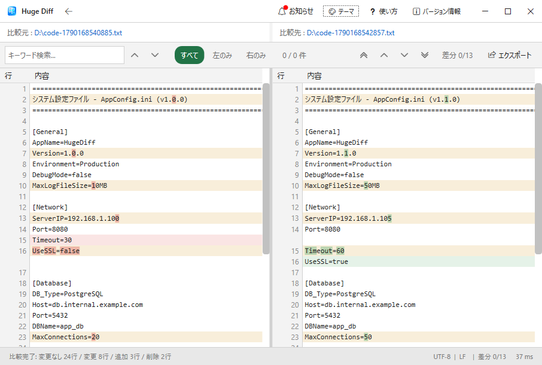

最新版 v1.0.0
HugeDiff
ギガ超えのデータも数秒で表示。大容量テキストファイルのための差分比較ツール。
⚡ UI仮想化による大容量ファイルの高速描画
巨大なファイルを読み込んでも画面はフリーズしません。HugeDiffは画面描画にUI仮想化（Virtualization）技術を採用し、ストリーミング処理でデータを読み込むため、100万行を超えるファイルでも描画とスクロールを維持します。
🔒 比較データの外部送信なし（ローカル環境で処理）
ファイルの比較・解析処理はすべてローカルのPC内で実行されます。比較対象のデータが外部サーバーへ送信される仕様はないため、機密性の高いファイルもローカル環境内に留めたまま比較可能です。
※起動時にお知らせ等の情報を取得する通信を行いますが、ユーザーのファイル内容を送信する機能は含んでおりません。

▲ テキスト比較画面（ダークモード）。右下のパネルからテキストへの出力機能を呼び出せます。

▲ フォルダ比較。変更ファイルを階層で特定。

▲ ライトモード搭載。好みに合わせて切替可能。
■ 主な機能と技術仕様
- 大規模ファイル高速処理： UI仮想化とストリーミング処理により、100万行を超える大容量ログでも数秒で読み込みを完了し、フリーズすることなく滑らかにスクロールできます。
- 差分エクスポート： 比較結果はテキストファイルへの出力、またはクリップボードへのコピーに対応しています。
- フォルダの構造比較： 単一ファイルの比較だけでなく、フォルダ同士の階層構造やファイル配置の差分を一括で確認できます。
- テーマ切り替え： 長時間の作業でも目が疲れにくいダークモードと、標準的なライトモードを搭載しています。
- 日本語 / 英語UIの切り替え： メニューなどの表示言語は、日本語と英語を標準で切り替えることができます。
- ランタイム・インストール不要： .NETランタイムを内包しているため、事前の環境構築は不要です。Zipを解凍するだけですぐに使え、システムレジストリも変更しません。
⚠️ 初回起動時に青い画面が表示された場合
コード署名証明書を持たない個人開発アプリのため、Windows Defender SmartScreenによる警告（「WindowsによってPCが保護されました」）が表示される場合があります。
【起動手順】 画面内の 「詳細情報」 をクリックし、現れた 「実行」 ボタンを押してください。
■ 動作環境
| 対応OS | Windows 10 / 11 (64bit) |
|---|---|
| 比較対象 | テキストファイル, ソースコード, フォルダ（ディレクトリ構造） |
| 動作条件 | 完全オフライン環境での動作に対応 |
■ 更新履歴
2026/10/02 - v1.0.0：初版リリース